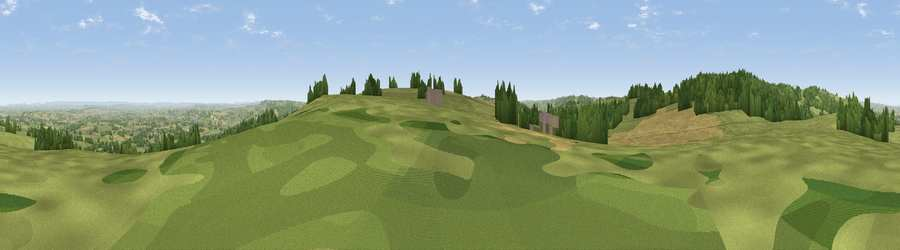

Viewpoint near Buckland St. Mary
#8295 in England · top 18% of its area beats it · near Buckland St. MaryThe view, rendered

A 360° render of this exact spot computed from the terrain model, tree cover and land cover — summer colours, afternoon light, calibrated against photographs of famous viewpoints. Real trees, hedges and buildings will differ in detail.
The panorama
Grey silhouette: terrain skyline in each direction (720 bearings, Earth curvature and refraction included). Dashed green: skyline with trees (+15 m) and buildings (+8 m) as obstacles. Blue strip: how far the ground is visible on each bearing.
Where the view opens
Wedge length = distance to the farthest visible ground on that bearing (vegetation-aware). Rings at 10, 25 and 50 km.
What fills the view
60% grassland · 22% woodland · 18% cropland · 1% built-up
Angular shares of the visible panorama (visual magnitude), not map area. Landscape diversity 0.43 (0–1 Shannon).
Key numbers
More beautiful places nearby
The staircase of upgrades: each row has a higher view potential than everything closer. Driving times are estimates from straight-line distance, calibrated against real road routing — check an actual route before setting out.
| Place | Direction | Drive | Score |
|---|---|---|---|
| Viewpoint near Combe St Nicholas | SE · 1 km | ~3 min | 67.9 |
| Viewpoint near Buckland St. Mary | NNW · 2 km | ~6 min | 72.2 |
| Viewpoint near Buckland St. Mary | NNW · 3 km | ~7 min | 77.3 |
| Viewpoint near Hewish | ESE · 12 km | ~22 min | 78.5 |
| Lambert's Castle Hill | SSE · 17 km | ~29 min | 78.7 |
| Viewpoint near Burstock | SE · 17 km | ~30 min | 81.8 |
| Lewesdon Hill | SE · 19 km | ~33 min | 83.3 |
| Viewpoint near West Bagborough | NNW · 24 km | ~39 min | 84.3 |
50.91421, -3.01168 · source: screening · position refined by local search. Computed location — check access rights before visiting.